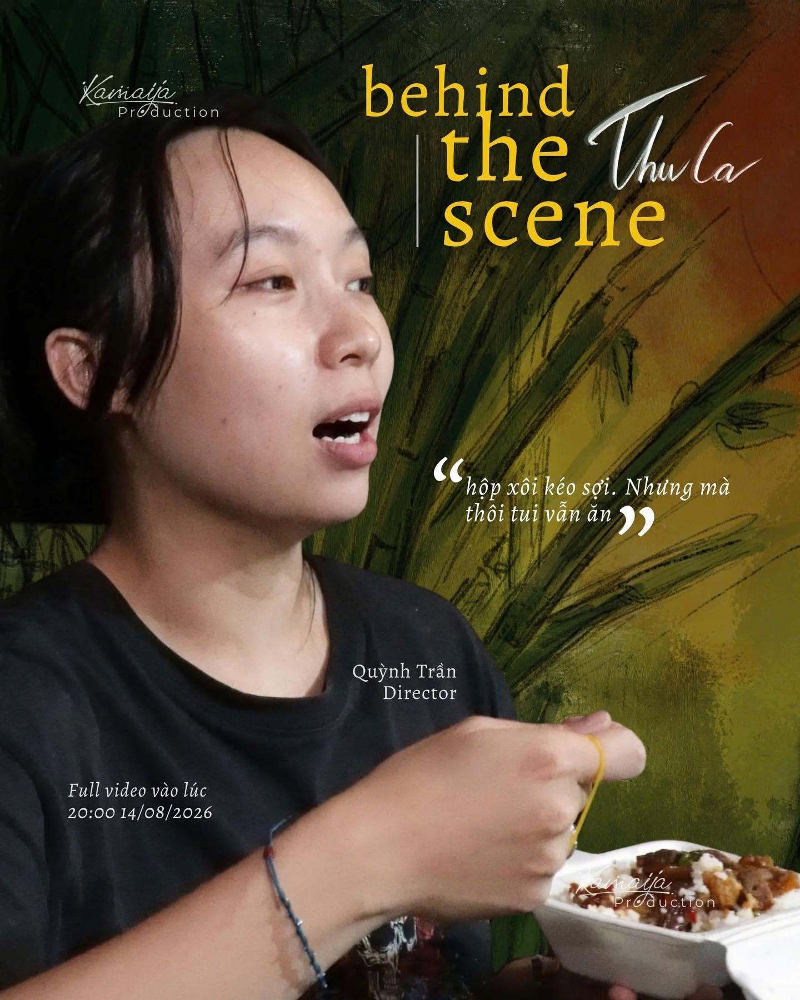
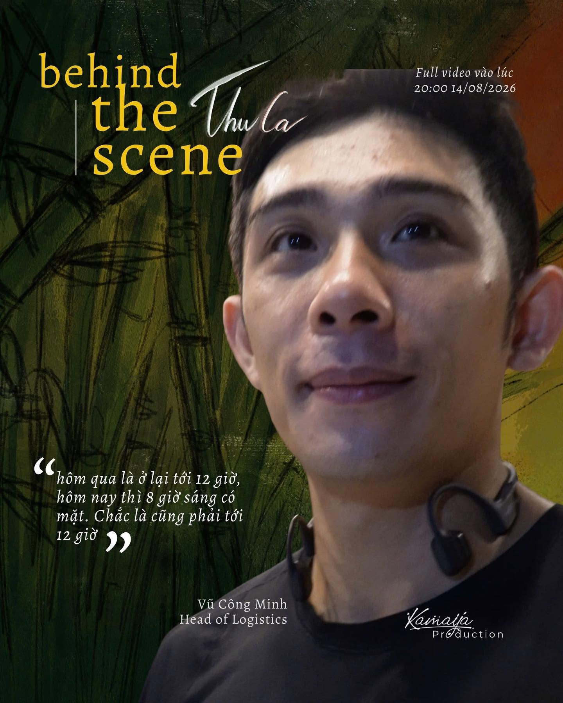
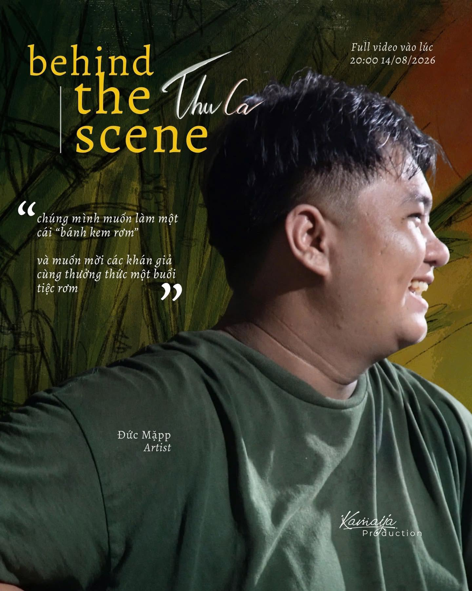
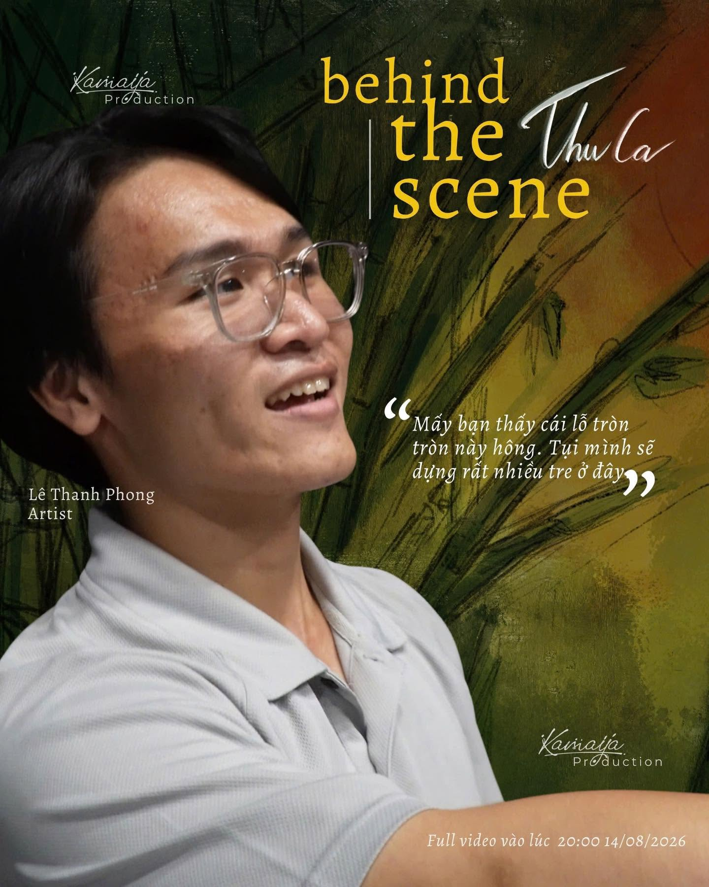

Quỳnh
Director
Quỳnh là nhân vật chính trong nhóm với giọng hát ấm áp và phong cách biểu diễn tự nhiên. Cô bắt đầu sự nghiệp âm nhạc từ các buổi live nhỏ và dần thu hút khán giả bằng câu chuyện đời sống và chất indie riêng biệt.
Với niềm đam mê sáng tác, Quỳnh luôn đem đến từng bài hát như một trải nghiệm chân thật, gần gũi và đầy cảm xúc cho người nghe.
Minh
Head of logistic
Minh là trái tim sáng tạo phía sau nhiều dự án của nhóm, chịu trách nhiệm định hướng âm thanh và kết cấu bài hát. Anh có tầm nhìn thẩm mỹ riêng biệt và thường mang đến những bản phối vừa thô vừa mượt, rất phù hợp với chất indie đặc trưng.
Khả năng phối ghép nhạc cụ và tạo không khí của Minh đã giúp Kamaya xây dựng được phong cách độc đáo, đồng thời kết nối cảm xúc sâu sắc với người nghe.


Duc
Artist
Duc phụ trách phần guitar và hòa âm, mang tới những giai điệu mộc mạc nhưng đầy cảm xúc. Anh có cách chơi tinh tế, thường tạo điểm nhấn cho các tiết mục bằng các đoạn solo ngắn nhưng ấn tượng.
Với niềm đam mê retro và kỹ thuật vững, Duc là cầu nối giữa ý tưởng sáng tác và bản phối hoàn chỉnh.
Phong
Artist
Phong là trống chính của ban nhạc, giữ nhịp và truyền năng lượng cho mỗi buổi diễn. Phong có phong cách chơi mạnh mẽ, uyển chuyển, phù hợp cho cả những bản ballad lẫn tiết mục rock sôi động.
Khả năng điều tiết động lực âm nhạc của Phong giúp cả band giữ nhịp cảm xúc chặt chẽ trên sân khấu.
